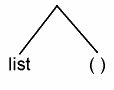

Contents | The Lisp Editor ED | Trees and Recursion
A useful way to see what a deeply embedded list looks like is to think of it as a tree. A tree, as the name implies, is a structure with a root, branches and leaves. This is a tree.
The above tree is the representation of the list((Mary had a) (little (lambda)))Each node of the tree indicates the starting point of a pair of elements. The root [first node] indicates the starting point of the main list. The leaves of the tree are the atoms in the list.
Notice that each node of the tree branches two ways. This type of tree is called a binary tree because of the two way branching.
Let's take a look at a simpler tree.
(a list)This tree has two nodes and four branches. There are atoms at the ends of the lowest branches [NIL is an atom too!].
(new stuff)It looks the same. Now, let's insert the second tree into the first, replacing "(new stuff)" for "a". The resulting tree looks like the following diagram.
((new stuff) list)When we look at the CAR of the above tree we are looking at
(new stuff)CAR can be thought of as returning all the material hanging on the left branch. CDR, as you might expect, returns the material on the right branch.
(list) This is why there are still a set of parentheses around it. Note that all the trees eventually terminate in NIL ["()"]. Recall that if you keep taking the CDR of a list you will eventually hit a NIL. The reason for this should now be apparent. If we were to insert a NIL into the end of the list, we would get:
((new stuff) list ())This is the CDR of the above list.
(list ())The CDR of that is
(())CAR of that is
() [that is: NIL]So is CDR.
Both the CAR and CDR of NIL are NIL. Thus, we can't change the list from here on without CONSing stuff onto it. Let's do so now.
(setq worktree ())
(setq worktree (cons 'stuff worktree))
(setq worktree (cons '(more) worktree))You should be able to draw and analyze the functions of CONC and various other simple Lisp functions.